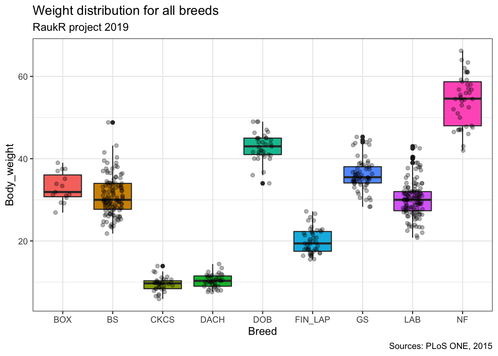
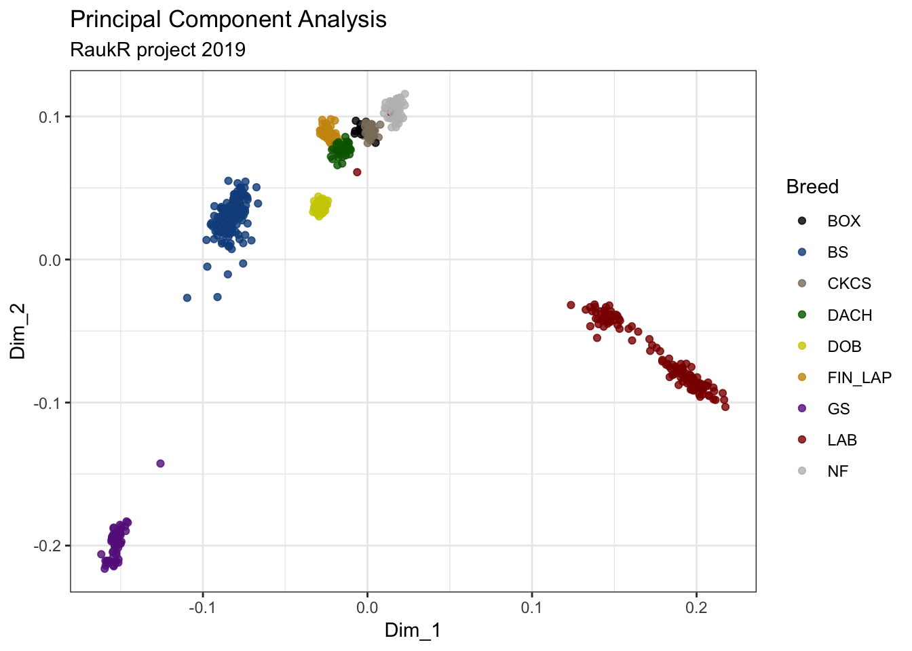
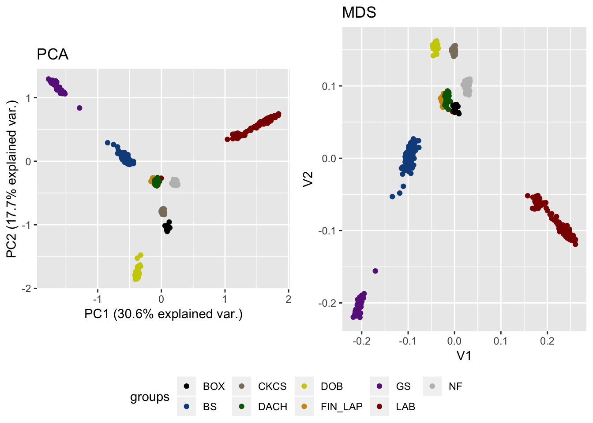

# number of dogs per breed (male, female)
dogs <- data_raw@phdata %>%
group_by(Breed, sex) %>%
summarize(n = n()) %>%
group_by(Breed) %>%
spread(key="sex", value = "n" ) %>%
mutate_all(~replace(., is.na(.), 0))## `mutate_all()` ignored the following grouping variables:
## Column `Breed`
## Use `mutate_at(df, vars(-group_cols()), myoperation)` to silence the message.dogs$Breed_name <- c("Boxer",
"Belgian Shepperd",
"Cavalier King Charles spaniel",
"Dachshund",
"Doberman pinscher",
"Finnish lapphund",
"German Shepperd",
"Labrador retriever",
"Newfoundland")
colnames(dogs)<- c("Abbreviation", "Female", "Male", "Breed")
print(dogs[,c("Breed", "Abbreviation", "Female", "Male")])## # A tibble: 9 x 4
## # Groups: Breed [9]
## Breed Abbreviation Female Male
## <chr> <chr> <dbl> <dbl>
## 1 Boxer BOX 0 15
## 2 Belgian Shepperd BS 0 121
## 3 Cavalier King Charles spaniel CKCS 0 34
## 4 Dachshund DACH 0 40
## 5 Doberman pinscher DOB 0 36
## 6 Finnish lapphund FIN_LAP 0 47
## 7 German Shepperd GS 0 65
## 8 Labrador retriever LAB 73 52
## 9 Newfoundland NF 44 1country_info <- data_raw@phdata %>%
group_by(Country) %>%
summarize(total_dogs = sum(n())) %>%
arrange(desc(total_dogs))
country_info$fullname <- c("Finland", "Belgium", "Sweden", "France", "Denmark")
colnames(country_info)<- c("Abbreviation", "Total number of dogs", "Country")
print(country_info[,c("Country", "Abbreviation", "Total number of dogs")])## # A tibble: 5 x 3
## Country Abbreviation `Total number of dogs`
## <chr> <chr> <int>
## 1 Finland Fin 120
## 2 Belgium Bel 118
## 3 Sweden Swe 111
## 4 France Fra 90
## 5 Denmark Den 89data_raw@phdata %>%
group_by(Breed, Country) %>%
summarize(Dogs = n()) %>%
arrange(desc(Dogs)) %>%
arrange(desc(Country))Table with the mean age and weight of the dogs, taking sex into account
# mean ans sd functions
funm <- function(x){mean(x, na.rm = T)}
#table
dogsWH <- data_raw@phdata %>%
group_by(Breed, sex) %>%
summarize(n = n(),
mean.Age = funm(Age),
mean.Weight = funm(Body_weight))
dogsWH$sex[dogsWH$sex == 0]<- "female"
dogsWH$sex[dogsWH$sex == 1]<- "male"
print(dogsWH)## # A tibble: 11 x 5
## # Groups: Breed [9]
## Breed sex n mean.Age mean.Weight
## <chr> <chr> <int> <dbl> <dbl>
## 1 BOX male 15 3.43 33.0
## 2 BS male 121 3.74 30.9
## 3 CKCS male 34 3.34 9.48
## 4 DACH male 40 3.67 10.3
## 5 DOB male 36 3.00 42.9
## 6 FIN_LAP male 47 3.61 20.0
## 7 GS male 65 3.53 36.0
## 8 LAB female 73 3.58 29.1
## 9 LAB male 52 3.60 31.8
## 10 NF female 44 3.38 54.2
## 11 NF male 1 4.1 58Weight distribution for all breeds
data_raw@phdata %>%
dplyr::select(Breed, Body_weight) %>%
na.omit() %>%
ggplot(aes(x=Breed, y=Body_weight, fill=Breed)) +
geom_boxplot() +
geom_jitter(width = 0.2, alpha=0.3) +
labs(title="Weight distribution for all breeds",
subtitle="RaukR project 2019",
caption="Sources: PLoS ONE, 2015")+
theme_bw() +
theme(legend.position = "none")

#arranging the two grids side by side with one legend
library(gridExtra)
library(grid)
library(ggplot2)
library(lattice)
library(ggpubr)
ggarrange(g,z, ncol=2, nrow=1, common.legend = TRUE, legend="bottom")